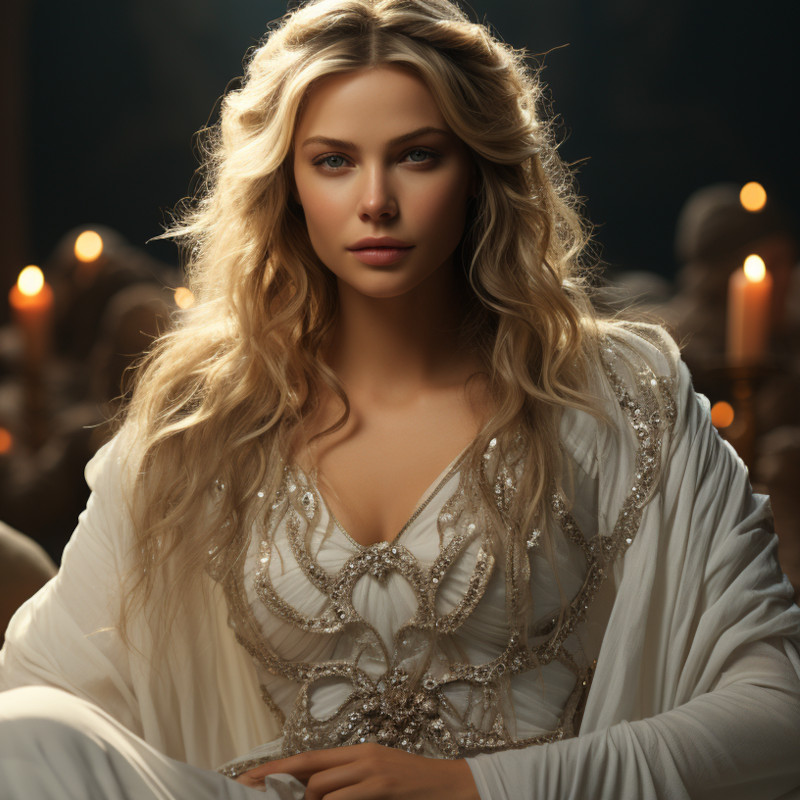

Elenya Ilírely

Figure 1: Elenya Ilírely
- Age
- Middle Aged
- Race
- Hallashim
- Occupation
- Tanamil (High Matriarch) of Tanquende
- Home
- Tanquende (City of)
- Enneagram Scale
- Type 9: The Peace Maker
Characteristics
- Desire: Elenya’s desire is to maintain inner and outer peace within Tanquende and among its people. She seeks harmony, unity, and tranquility in all aspects of her leadership.
- Fear: She fears conflict, discord, and disruption in her kingdom. Her anxiety arises from the possibility of division or unrest among the Elven community.
- Motivation: Elenya is driven by her desire to create a peaceful and harmonious environment for the Hallashim and to ensure their well-being. She is motivated to preserve Elven culture and traditions while fostering understanding with other races.
- Strengths: Her strengths include being empathetic, patient, and an excellent mediator. She has a natural ability to see multiple perspectives and seeks consensus in decision-making.
- Challenges: Elenya’s challenges may include a tendency to avoid confrontation, which can sometimes lead to passive-aggressive behavior or reluctance to address difficult issues directly. She might also struggle with asserting her own needs.
- Growth: In growth, Elenya can embrace her leadership role more assertively while maintaining her commitment to peace. She can learn to address conflicts openly and express her own desires and boundaries.
- Background
- Elenya Ilírelya was born into a respected Hallashim family with a long lineage of leaders. Her upbringing was steeped in the traditions and responsibilities of the Matriarch role. From a young age, she demonstrated exceptional intelligence and empathy, traits that would serve her well in her future leadership.
When she assumed the title of Tanamil (High Matriarch), Elenya took it upon herself to modernize certain aspects of Elven society while preserving the core values and traditions that have defined Tanquende for centuries. She has been a strong advocate for greater inclusivity and cooperation with other races in Naurrnen, believing that unity and understanding are key to a brighter future.
Elenya’s leadership has been marked by her dedication to preserving the natural beauty of Tanquende’s forests and ensuring that the Hallashim remain stewards of their land. She is known for her commitment to peaceful diplomacy and her efforts to strengthen diplomatic ties with neighboring territories, including the Gran Imperio.
As Tanamil, Elenya Ilírelya is a symbol of unity and tradition in Tanquende, respected not only by the Hallashim but also by the diverse communities that inhabit the Elven kingdom. Her leadership has guided Tanquende through both periods of tranquility and times of external challenges, earning her a place of honor and admiration among her people.